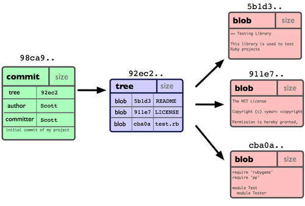
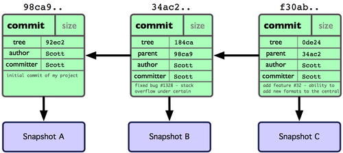
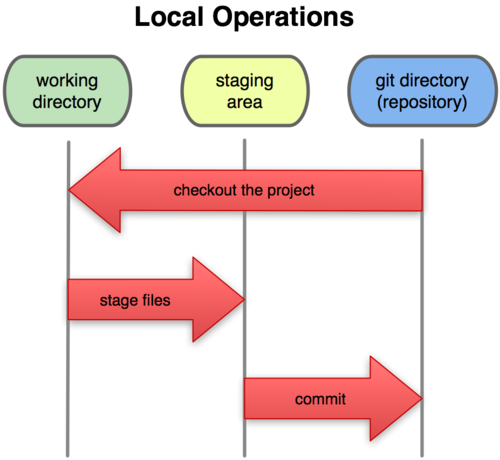
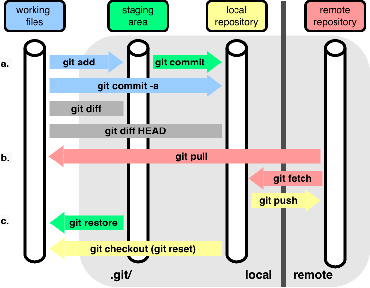

Code
import newton
import numpy as np
newton.optimize(start, fun) ## Assuming your function is called `optimize`.
newton.optimize(2.5, np.cos) ## Minimizing cos(x) from close-ish to one minimum.This module presents the core content of the workshop on version control (using Git), code style, documentation, and testing.
I think it’s fair to say that most of us are still trying to understand how best to learn with the help of AI, without fooling ourselves into using AI without really learning/understanding.
You’re welcome to use an AI assistant (e.g., you can use GitHub Copilot for free with the GitHub Education program), but I strongly suggest you use it to assist and critique code you start to write on your own or ask it for tips rather than having it generate full code for you. That said, a regular internet search is likely to be just as effective for much of what we’ll be doing in the workshop.
If you have it generate entire blocks of code, you are unlikely to remember the syntax and ideas later, unlikely to understand well enough to debug/troubleshoot in the future, and likely to introduce errors from AI hallucinations.
When you do have AI generate code, particularly when learning or for important code, make sure you run, understand, and critique the result completely.
You may also want to look at this useful perspective from Software Carpentry about learning to code in the age of AI.
We’ll use a running example, Newton’s method for optimization, during this workshop. It’s simple enough to be straightforward to code but can involve various modifications, extensions, etc. to be a rich enough example that we can use it to demonstrate various topics and tools.
Recall that Newton’s method works as follows to optimize some objective function, \(f(x)\), as a function of univariate or multivariate \(x\), where \(f(x)\) is univariate.
Newton’s method is iterative. If we are at step \(t-1\), the next value (when minimizing a function of univariate \(x\)) is:
\[ x_t = x_{t-1} - f^{\prime}(x_{t-1}) / f^{\prime\prime}(x_{t-1}) \]
Here are the steps:
You can derive it by finding the root (aka zero) of the gradient function using a Taylor series approximation to the gradient.
Here’s what you’ll need your code to do:
Don’t make your finite difference (“epsilon”) too small or you’ll actually get inaccurate estimates. (We’ll discuss why when we talk a bit about numerical issues in computing later.)
Before trying to run the full Newton method, make sure your derivative calculations work using a couple examples.
For now, please do not use any Python packages that provide finite difference-based derivatives. (We’ll do that later, and it’s helpful to have more of our own code available for the work we’ll do today.)
You’re welcome to develop your code in a Jupyter Notebook, in the DataHub editor, in a separate editor on your laptop, or in VS Code on the DataHub (or your laptop).
Once you’ve written your Python functions, put your code into a simple text file, called newton.py. In doing so you’ve created a Python module.
Don’t use a Jupyter notebook (.ipynb) file at this stage, as a notebook file won’t work as a module and is not handled in git in the same nice manner as simple text files.
Once you have your module, you can use it like this:
import newton
import numpy as np
newton.optimize(start, fun) ## Assuming your function is called `optimize`.
newton.optimize(2.5, np.cos) ## Minimizing cos(x) from close-ish to one minimum.A module is a collection of related code in a file with the extension .py. The code can include functions, classes, and variables, as well as runnable code. To access the objects in the module, you need to import the module.
Go to github.com/<your_username> and click on the Repositories tag. Then click on the New button.
newton-practice (so others who are working with you can find it easily)Python under Add .gitignore.It’s also possible to create the repository from the terminal on your machine and then link it to your GitHub account, but that’s a couple extra steps we won’t go into here at the moment.
Authenticating with GitHub can be a bit tricky, particularly when using DataHub (i.e., JupyterHub).
Please follow these instructions.
In the terminal, let’s make a small change to the README, register the change with Git (this is called a commit), and push the changes upstream to GitHub (which has the remote copy of the repository).
First make a local copy of the repository from the remote copy on GitHub. It’s best do this outside of the compute-skills-2026 directory; otherwise you’ll have a repository nested within a repository.
## First `cd` to your home directory to avoid cloning a repo within a repo.
cd
git clone https://github.com/<your_username>/newton-practiceNow if we run this:
cd newton-practice
ls -l .git
cat .git/configwe should see a bunch of output (truncated here) indicating that newton-practice is a Git repository, and that in this case the local repository is linked to a remote repository (the repository we created on GitHub):
total 40
-rw-r--r-- 1 jovyan jovyan 264 Aug 2 15:04 config
-rw-r--r-- 1 jovyan jovyan 73 Aug 2 15:04 description
-rw-r--r-- 1 jovyan jovyan 21 Aug 2 15:04 HEAD
-rw-r--r-- 1 paciorek scfstaff 16 Jul 24 14:48 COMMIT_EDITMSG
-rw-r--r-- 1 paciorek scfstaff 656 Jul 23 18:20 config
<snip>
<snip>
[remote "origin"]
url = https://github.com/paciorek/newton-practice
fetch = +refs/heads/*:refs/remotes/origin/*
<snip>(One can also see the info about the remote repository with git remote -v.)
Most of you should ignore this note if you’re just getting started with Git and GitHub.
However, some of you may be familiar with git clone git@github.com:<username>/repository, which uses the SSH protocol to interact with GitHub.
That would be fine too, including for this workshop, but only if you know what you are doing. It would require using SSH keys to authenticate from DataHub to GitHub when we get to the point of pushing changes to GitHub, whereas we provide instructions based on HTTPS.
Next move (or copy) your Python module into the repository directory. For the demo, I’ll use a version of the Newton code that I wrote that has some bugs in it (for later debugging). The file is not in the repository.
cd ~/newton-practice
cp ../compute-skills-2026/units/newton-buggy.py newton.py
## Tell git to track the file (put it in the staging area).
git add newton.pyThe key thing is to make sure that you copy the code file into the directory of the new repository.
You can do this with cp in the shell as I did above.
If you’re learning to use the shell, it’s best to practice doing the copying in the shell, but if you really need to, you may be able to drag and move it within the DataHub file manager window pane.
Of if you have it on your laptop in a local file you edited there (instead of within DataHub), navigate to the directory of the new repository in the DataHub file manager window pane and click on the “Upload Files” button.
Edit the README file to indicate that the repository has a basic implementation of Newton’s method.
Here are some options for opening an Editor to edit your code/markdown/text files.
emacs README.md).File -> New Launcher and then selecting the VS Code icon.git status
## Tell git to keep track of the changes to the file.
git add README.md
git status## Register the changes with Git.
git commit -m"Add basic implementation of Newton's method."
git status
## Synchronize the changes with the remote.
git pushWe could have cloned the (public) repository without the gh_scoped_creds credentials stuff earlier, but if we tried to push to it, we would have been faced with GitHub asking for our password, which would have required us to create a GitHub authentication token that we would paste in.
Instead of having to add files that already part of the repository (such as README.md) we could do:
git commit -a -m"Update README."We do need to explicitly add any new files (e.g., newton.py) that are not yet registered with git via git add.
Caution: relying heavily on -a can result in commits that combine a bunch of unrelated changes (and possibly changes you didn’t want to commit). Omitting -a and using git add for each changed file gives you more control and is safer.
You can also edit and add files directly to your GitHub repository in a browser window. This is a good backup if you run into problems making commits from DataHub or your laptop.
Some tips:
-m flag to git commit.If you find your commit message is covering multiple topics, it probably means you should have made multiple (“atomic”) commits.
Following the steps above, add your new code to your repository. Then commit it, providing a meaningful commit message.
You could push it to GitHub if you want, but that will be part of the exercise at the end of Section 3, so we’ll troubleshoot any problems with pushing to GitHub then.
So far we’ve just introduced Git by its mechanics/syntax. This is ok (albeit not ideal) for basic one-person operation, but to really use Git effectively you need to understand conceptually how it works.
More generally if you understand things conceptually, then looking up the syntax of a command or the mechanics of how to do something will be straightforward.
We’ll start with some visuals and then go back to some Git terminology and to the structure of a repository.
Fernando Perez’s Statistics 159/259 materials have a nice visualization (online version, PDF version) of a basic Git workflow that we’ll walk through.
Note that we haven’t actually seen in practice some of what is shown in the visual: tags, branches, and merging, but we’ll be using those ideas later.
Fernando’s lecture materials from Statistics 159/259 illustrate that the steps shown in the visualization correspond exactly to what happens when running the Git commands from the command line.
A commit is a snapshot of our work at a point in time. So far in our own repository, we’ve been working with a linear sequence of snapshots, but the visualization showed that we can actually have a directed acyclic graph (DAG) of snapshots once we have branches.
Each commit has:
diff tool) relative to the parent commit.
We identify each node (commit) with a hash, a fingerprint of the content of each commit and its parent. It is important the fact that the hash includes information of the parent node, since this allow us to keep the check the structural consistency of the DAG.
We can illustrate what Git is doing easily in Python.
Let’s create a first hash:
from hashlib import sha1
# Our first commit
data1 = b'This is the start of my paper.'
meta1 = b'date: 1/1/17'
hash1 = sha1(data1 + meta1).hexdigest( )
print('Hash:', hash1)Hash: 3b32905baabd5ff22b3832c892078f78f5e5bd3b Every small change we make on the previous text with result in a full change of the associated hash code. Notice also how in the next hash we have included the information of the parent node.
data2 = b'Some more text in my paper...'
meta2 = b'date: 1/2/1'
# Note we add the parent hash here!
hash2 = sha1(data2 + meta2 + hash1.encode()).hexdigest()
print('Hash:', hash2)Hash: 1c12d2aad51d5fc33e5b83a03b8787dfadde92a4A repository is the set of files for a project with their history. It’s a collection of commits in the form of an directed acyclic graph.

Some other terms:
The index (staging area) keeps track of changes (made to tracked files) that are added, but that are not yet committed.
Here’s a high-level overview of how the staging area relates to the other pieces of what we’ve been doing.

And here’s a more-detailed visualization of how various Git commands relate to your current directory, the staging area and the repository.

Once we have a conceptual understanding, then the commands used to undo or modify changes we’ve made are easier to understand, though often one has to look up the particular specific commands.
If I make some changes to a file that I decide are a mistake, before git add (i.e., before registering/staging the changes with git), I can always still edit the file to undo the mistakes.
But I can also go back to the version stored by Git.
# Current, recommended syntax:
git restore file.txt
# Alternative (older) syntax:
# git checkout -- file.txt If we’ve added (staged) files via git add but have not yet committed them, the files are in the index (staging area). We can get those changes out of the staging area like this:
git status
# Current, recommended syntax:
git restore --staged file.txt
# Alternative (older) syntax:
# git reset HEAD file.txt # This is older syntax.
git statusNote that the changes still exist in file.txt but they’re no longer registered/staged with Git.
Suppose you need to add or modify to your commit. This illustrates a few things you might do to update your commit.
git commit -m 'Some commit'
## 1. Perhaps you forgot to include a new file.
git add forgotten_file.txt
## 2. Perhaps you forgot to edit an existing file.
# Edit file.txt.
git add file.txt
## 3. Perhaps you need to get a version of a file from before.
# Get version of file from previous commit.
git checkout <commit_hash> file.txt
git commit --amendAlternatively suppose you want to undo a commit:
## To go back to the previous commit, but leave the changes in the working directory.
git reset HEAD~1
## To go back to a specific commit.
git reset <commit_hash>
## To go back to a previous commit and remove any changes in the working directory.
git reset --hard <commit_hash>git revert <commit_hash>
git pushNote that this creates a new commit that undoes the changes you don’t want. So the undoing shows up in the history. This is the safest option.
If you’re sure no one else has pulled your changes from the remote:
git reset <commit_hash>
# Make changes
git commit -a -m'Rework the mistake.'
git push -f origin <branch_name>This will remove the previous commit at the remote (GitHub in our case).
This will make them easily available to your partner and mimics the process we want/need to use anyway when interacting with remote collaborators or working asynchronously. Do your collaboration on GitHub, which is designed to help with collaboration, and not via email/text/etc.
git pushGo to your partner’s repository at https://github.com/<user_name>/newton-practice.
Issues button and click on New issue).In response to your partner’s comments, make change(s) (possibly only small changes, but at least some change to give you practice) to your newton.py code.
You can do this in DataHub (or locally on your laptop if that’s what you’re doing) and make a commit as we did in the previous exercise.
Or you can do the editing in your GitHub browser window by clicking on the file and choosing the pencil icon (far right) to edit it. When you save it, a commit will be made. Make sure to provide a commit message (noting the GitHub issue is a good idea). You can also create new files via the + button in the top of the left sidebar. If you make changes directly on GitHub, you’ll also want to run git pull to pull down the changes to your local repository on DataHub.
Finally, close the GitHub issue that your partner opened, leaving a brief note that you addressed the comments/suggestions.
Having a (reasonably) consistent and clean style, plus documentation, is important for being able to read and maintain your code.
A: You, but at some point in the future by which you will have forgotten what the code does and why.
I can’t tell you how many times I’ve looked back at my own code and been amazed at how little I remember and frustrated with the former self who wrote it.
A go-to reference on Python code style is the PEP8 style guide. That said, it’s extensive, quite detailed, and hard to absorb quickly.
Here are a few key suggestions:
Indentation:
Whitespace: use it in a variety of places. Some places where it is good to have it are
x = x * 3;myfun(x, 3, data);x = [3, 5, 7]; andx[3, :4].Use blank lines to separate blocks of code with comments to say what the block does.
Use whitespaces or parentheses for clarity even if not needed for order of operations. For example, a/y*x will work but is not easy to read and you can easily induce a bug if you forget the order of ops. Instead, use a/y * x or (a/y) * x.
Avoid code lines longer than 79 characters and comment/docstring lines longer than 72 characters.
Comments:
x = x + 1 # Increment x..x = x + 1 # Compensate for image border.You can use parentheses to group operations such that they can be split up into lines and easily commented, e.g.,
newdf = (
pd.read_csv('file.csv') # 1988 census data.
.rename(columns = {'STATE': 'us_state'}) # Adjust column names.
.dropna() # Remove rows with missing values.
)Being consistent about the naming style for objects and functions is hard, but try to be consistent. PEP8 suggests:
number_of_its or n_its.Try to have the names be informative without being overly long.
Don’t overwrite names of objects/functions that already exist in the language. E.g., don’t use len in Python. That said, the namespace system helps with the unavoidable cases where there are name conflicts.
Use active names for functions (e.g., calc_loglik, calc_log_lik rather than loglik or loglik_calc). Functions are like to verbs in human language.
Learn from others’ code.
Linting is the process of applying a tool to your code to enforce style.
We’ll demo using ruff to some example code. You might also consider black.
We’ll practice with ruff with a small module we’ll use next also for debugging.
First, we check for and fix syntax errors.
ruff check newton.pyThen we ask ruff to reformat to conform to standard style.
cp newton.py newton-save.py # So we can see what `ruff` did.
ruff format newton.pyLet’s see what changed:
diff newton-save.py newton.pyhelp(numpy.linalg.cholesky) to see the different parts and the format. Docstrings are also a good thing to ask an AI coding tool to help with.help(optimize) to check that your documentation shows up.ruff to your code.Once you start writing more complicated code, even in an interpreted language such as Python that you can run line-by-line, you’ll want to use a debugger, particularly when you have nested function calls.
Debugging can be a slow process, so you typically start a debugging session by deciding which line in your code you would like to start tracing the behavior from, and you place a breakpoint. Then you can have the debugger run the program up to that point and stop at it, allowing you to:
The stack is the series of nested function calls. When an error occurs, Python will print the stack trace showing the sequence of calls leading to the error. This can be helpful and distracting/confusing.
We’ll use the debugger in JupyterLab; similar functionality is in VS Code. And you can use pdb directly from the command line; the ideas are all the same.
Let’s debug my buggy implementation of Newton’s method.
import newton
import numpy as np
newton.optimize(2.95, np.cos)Clearly that doesn’t work. Let’s debug it.
We’ll work in our Jupyter notebook.
Callstack pane, we can:
Here are screenshots showing the steps/components of the visual debugger:
If we want to debug into functions defined in files, we can add breakpoint() in the location in the file where we want the breakpoint and one should see the code in the SOURCE box in the debugger panel. So far, I’ve found this to be a bit hard to use, but that may well just be my inexperience with the JupyterLab debugger.
Note that the value of x_new doesn’t show up automatically in the variables pane. This is probably because it is a numpy variable rather than a regular Python variable.
ipdb)We can use the IPython %debug “magic” to activate a debugger as well.
One way this is particularly useful is “post-mortem” debugging, i.e., debugging when exceptions (errors) have occurred. We just invoke %debug and then (re)run the code that is failing. The ipdb debugger will be invoked when the error occurs.
Once in the ipdb debugger, we can use these commands (most of which correspond to icons we used to control the JupyterLab debugger behavior):
c to continue execution (until the end or the next breakpoint)n to run the next line of codeu and d to step up and down through the stack of function callsp expr to print the result of the expr codeq to quit the debuggerWe’ll put a silly error into the code, restart the kernel, and use the post-mortem debugging approach as an illustration.
Run your Newton method on the following function, \(x^4/4 - x^3 -x\), for various starting values. Sometimes it should fail.
Use the debugger to try to see what goes wrong. (For our purposes here, do this using the debugger; don’t figure it out from first principles mathematically or graphically.)
Conditional breakpoints are a useful tool that causes the debugger to stop at a breakpoint only if some condition is true (e.g., if some extreme value is reached in the Newton iterations). I don’t see that it’s possible to do this with the JupyterLab debugger, but with the ipdb debugger you can do things like this to debug a particular line of a particular file if a condition (here x==5) is met:
b path/to/script.py:999, x==5pytestpytest is a very popular package/framework for testing.
We create test functions that check for the expected result.
We use assert statements. These are ways of generally setting up sanity checks in your code. They are usually used in development, or perhaps data analysis workflows, rather than production code. They are a core part of setting up tests such as here with pytest.
Let’s look at a small example test file and then run the tests:
cat test_newton.py
pytest test_newton.py(From within Python, you can run pytest.main().)
With a partner, brainstorm some test cases for your implementation of Newton’s method in terms of the user’s function and input values a user might provide.
In addition to cases where it should succeed, you’ll want to consider cases where Newton’s method fails and test whether the user gets an informative result. Of course as a starting point, the case we used for the debugging exercise is a good one for a failing case.
We’ll collect some possible tests once each group has had a chance to brainstorm.
Implement your test cases as unit tests using the pytest package.
Include tests for:
with the expected output being what you want to happen, not necessarily what your function does.
You’ll want cases where you know the correct answer. Start simple.
For now don’t modify your code even if you start to suspect how it might fail. Writing the tests and then modifying code so they pass is an example of test-driven development.
To understand how Python handles error, you can take a look at the Errors and Exceptions section of the Software Carpentry workshop. The primary ideas covered are understanding error messages and tracebacks.
Now we’ll try to go beyond simply returning a failed result and see if we can trap problems early on and write more robust code.
Work on the following improvements:
Your code should handle errors using exceptions, as discussed earlier for Python itself. We don’t have time to go fully into how Python handles the wide variety of exceptions. But here are a few basic things you can do to raise an exception (i.e., to report an error and stop execution):
if not callable(f):
raise TypeError(f"Argument is not a function, it is of type {type(f)}")if x > 1e7:
raise RuntimeError(f"At iteration {iter}, optimization appears to be diverging")import warnings
if x > 3:
warnings.warn(f"{x} is greater than 3.", UserWarning)Next, if you have time, consider robustifying your code: